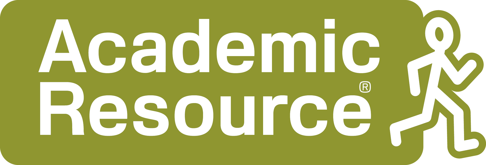

Huvudsponsor
Academic Resource är specialister på bemanning och rekrytering inom Life Science! Våra väletablerade kunder verkar inom olika delar av Life Science sektorn, främst läkemedels- och medicinteknisk industri. Det är allt från stora internationella koncerner till mellanstora bolag. De företag vi arbetar med ligger främst i Stockholm med omnejd – från Uppsala i norr till Strängnäs i söder. Hos oss finner du en bred variation av tjänster, allt från laboratorie- och processingenjör till QA och chefspositioner. Vi har både juniora och seniora roller, så frågan är: Vad är du intresserad av? Hoppas att vi kan hjälpa dig till nästa steg i karriären! we take you further
Affibody utvecklar nästa generations proteinläkemedel baserat på bolagets båda teknologiplattformar: Affibody-molekyler och Albumod. Affibody-molekyler är syntetiska proteiner som binder specifikt till önskat målprotein. Albumod-teknologin, är utvecklad för att öka effekten av proteinläkemedel genom att förlänga deras cirkulationstid i kroppen. Affibody är ett svenskt bolag med Investor som största ägare, genom Patricia Industries.
På ALTEN utvecklar och levererar vi kompetens för världsledande företag genom de mest engagerade teknik- och IT-konsulterna. Våra kunder återfinns inom branscher som Life Science, Energy, Telecom, Automotive och Industry, inom vilka vi är verksamma genom hela produktutvecklingskedjan. Som en del av ALTEN Group har vi över 28.000 medarbetare och verksamhet i 20 länder. Det är vår övertygelse att ökta engagemang skapas genom mäjligheten att påverka sin egen personliga utveckling - vår affärsmodell ger den möjligheten. Detta gör att vi kan erbjuda våra kunder de mest engagerade konsulterna, oavsett uppdrag. Tack vare ALTENs framgångsrika koncept där vi dels tar tillvara på erfarna konsulters kompetenser och samtidigt utvecklar unga förmågor mot en framgångsrik karriär har vi vunnit mark inom många branscher. Vår läkemedelssatsning bygger vidare på samma framgångsrika koncept som gjort oss till ett världsledande företag med ambitionen och förmågan att alltid leverera den bästa lösningen utifrån våra kunders specifika behov. ALTEN Sverige AB ser en stark efterfrågan och tillväxt inom läkemedelsindustrin och nyanställer engagerade och drivna konsulter för att bygga upp en egen organisation inom området. Inom ALTEN-koncernen är mer än var tjugonde konsult engagerad inom Life Science och området växer nu starkt även i Sverige.
Atlas Antibodies är en svensk tillverkare och leverantör av mer än 21,000 forskningsantikroppar mot mänskliga proteiner. Företaget grundades år 2006 av forskare från det prestigefulla Human Protein Atlas (HPA) projektet. HPAs uppdrag är att skapa en komplett karta av människans proteiner och visa var i kroppen de uttrycks. För att kunna spåra proteiner och deras lokalisering tillverkade HPA sina egna antikroppar. När andra forskare började visa stort intresse för dessa antikroppar bildades Atlas Antibodies för att möjliggöra försäljning av antikropparna till forskare världen över. Idag är Atlas Antibodies en betydande spelare på den globala antikroppsmarknaden med kunder i hela världen. Företaget står för kvalitet och expertis inom området och lyckas konkurrera med betydligt större antikroppsföretag. Genom åren har företagets framgångar blivit uppmärksammade inom vetenskapsvärlden. Tre år i rad blev Atlas Antibodies nominerat som ett av Sveriges mest lovande unga teknologiföretag. Dessutom utsåg Dagens Industri Atlas Antibodies till ett av dem snabbast växande företagen i Sverige. I dag är vi 55 personer som har Atlas Antibodies som arbetsgivare och fler tillkommer varje år. Vi kommer från olika bakgrunder, bland annat är många bioteknikingenjörer, kemiingenjörer, biomedicinare och biologer. Vi ser fram emot att höra från dig när du är klar med dina studier!
Bioteria är ett svenskt miljöteknikföretag som utvecklar och marknadsför produkter och tjänster inom fettavskiljning, avloppsteknik, avfallshantering och storköksventilation. Vi är världsledande inom waste management genom våra biotekniska lösningar på fettproblem, luktproblem och avloppsvattenbehandling. Vi ser bioteknik som en framtidslösning som går hand i hand med utvecklingen mot ett hållbart samhälle. Genom att ta hjälp av levande mikroorganismer och imitera naturliga biologiska processer kan vi reducera både koldoixidutsläpp och kemikalieanvändning – samtidigt som vi bekämpar ett av de svåraste avfallsproblemen i det moderna samhället: fett.
Vi är ett konsult- och rekryteringsföretag specialiserade på kompetenser inom naturvetenskap och teknik. Tillsammans med oss får du möjlighet att utvecklas och bredda din kompetens genom att vara ute på spännande uppdrag hos våra kunder! Som konsult får du en trygg anställning med möjlighet till omväxling. Uppdragen är oftast produktionsnära roller som laboratorieingenjör, kvalitetssäkrare, kvalitetsingenjör, processingenjör, projektledare samt inom medical information och regulatory affairs. Hos oss får du en konsultchef som är engagerad i ditt uppdrag och din karriärsutveckling. Vi ordnar olika event och utbildningar för våra konsulter som möjliggör erfarenhetsutbyte, nätverkande och insyn i hur det är att arbeta i olika roller och företag.
IDL Biotech är ett IVD företag som utvecklar, producerar och marknadsför diagnostiska tester för sjukvården, inom områdena onkologi och bakteriologi. Inom onkologi finns ett flertal tumörmarkörer för några av de vanligaste förekommande cancerformerna, såsom bröst-, lung-, prostata-, äggstocks- och blåscancer. Dessa tumörmarkörer kompletterar mer resurskrävande och kostsamma undersökningar inom cancervården och kan tidigt indikera om en behandling fungerar eller om patienten drabbats av ett återfall i sjukdomen. IDL Biotech har också ett bakteriologiskt snabbtest för en snabb, enkel och säker diagnos av tyfoidfeber, den allvarligaste formen av salmonella. Testet ger mycket goda möjligheter att ställa rätt diagnos i ett tidigt skede, utan korrekt behandling kan sjukdomen vara dödlig eller övergå i en kronisk form. IDL Biotech är baserat i Bromma och alla funktioner finns på plats där. Medarbetarundersökningar visar 100 % nöjda medarbetare där alla anställda känner delaktighet och engagemang och där anställda får växa med eget ansvar. På dess forsknings- och utvecklingsavdelning arbetar man både nationellt och internationell med framtagning och utveckling av produkter.
iCellate Medical was founded as a spin off from research performed at the Karolinska Institute and Karolinska Hospital. The company currently employs 6 persons and the office is located in Hagalund close to Karolinska Hospital. iCellate has developed a proprietary technology to detect and analyze circulation tumor cells (CTCs). Cancer spreads from its origin in a primary tumor to distant parts of the body through CTCs that migrate into the lymphatic and blood circulation systems. By identifying and analyzing these CTCs while they are still spreading the disease, iCellate can help physicians detect and target cancer at an early stage. What also makes CTCs important is the possibility to sequence the genomes of the detected cells. With the genomic sequencing data in hand, supplemented by advanced bio-informatics and clinical interpretation, iCellate can determine which oncogenic genetic variants cause the disease, how it should be treated and predict where the primary tumor is probably located in the body. iCellate strive to be in the very forefront of the liquid biopsy market, to change how cancer is diagnosed and managed.
Läkemedelsföretaget Octapharma är ett svenskt, familjeägt företag och en av de största aktörerna på den internationella marknaden för proteinbaserade läkemedel. Företaget, som grundades 1983, har idag drygt 7.100 anställda i 50 länder. år 2017 var omsättningen ca 1,7 miljarder Euro. Octapharmas läkemedel finns tillgängliga i mer än 100 länder över hela världen. Företaget har egna försäljningsorganisationer i ett 50 länder, i andra arbetar vi genom försäljningsagenter och distributörer.
Källa: https://www.octapharma.se/se/om-octapharma/om-octapharma.html
Sobi™ är ett internationellt läkemedelsföretag inriktat på sällsynta sjukdomar. Vår vision är att bli ansedd som en global ledare i att tillhandahålla innovativa behandlingar som gör betydande skillnad för människor som lever med sällsynta sjukdomar. Produktportföljen fokuserar främst på behandlingar inom hemofili och Specialty Care. Partnerskap inom utveckling och kommersialisering av produkter inom Specialty Care är en viktig del av vår strategi. Sobi är en pionjär inom bioteknologi med stort kunnande inom proteinteknik och produktion av biologiska läkemedel. Intäkterna uppgick 2017 till 6,5 miljarder kronor och antalet anställda var cirka 850. Aktien (STO: SOBI) är noterad på Nasdaq Stockholm. Ytterligare information finns på www.sobi.com.
Sveriges Ingenjörer välkomnar dig till vårt unika nätverk med 150 000 ingenjörsmedlemmar. Som studentmedlem erbjuder vi dig träning och stöd inför skarpt läge med allt från cv-granskning och karriärcoachning till hjälp med intervjuteknik. Du tar även del av landets bästa lönestatistik, digitaltidningen Ny Teknik samt aktiviteter som hålls på ditt lärosäte. Dessutom har du möjlighet att teckna förmånliga försäkringar och du har tillgång till experthjälp om något skulle gå snett på sommar eller extrajobbet. Välkommen att börja ditt liv som ingenjör med oss! Varför besöka oss? Hos oss kan du få ditt CV granskat eller råd och stöd i hur du söker ditt första ingenjörsjobb. Vi svarar dessutom gärna på frågor om våra stipendier, vår lönestatistik och tryggheten i arbetslivet. Kom förbi så hjälper vi dig att starta ditt liv som ingenjör
Sweco är Europas största teknikkonsultbolag med närmare 15 000 anställda. Vi finns på 50 platser i Sverige, och utför uppdrag i 70 olika länder. Vi arbetar med att utforma hållbara samhällen och städer, och är verksamma inom bland annat infrastruktur, konstruktion, energi och miljö och vatten.
ÅF är ett ingenjörs- och designföretag med verksamhet inom industri, energi och infrastruktur. åF är idag drygt 10 000 medarbetare och inom Life Science arbetar ca 450 personer med bland annat projektledning, process- och produktutveckling, kvalitet och validering inom läkemedel och medical device. Vi skapar hållbara lösningar för kommande generationer genom att förena människor och teknik. Vi är ett svenskt företag med bas i Europa och våra affärer och kunder finns över hela världen.